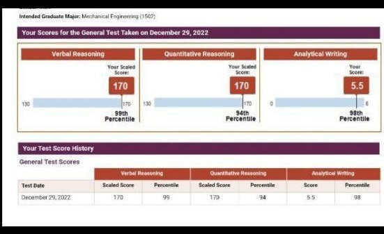
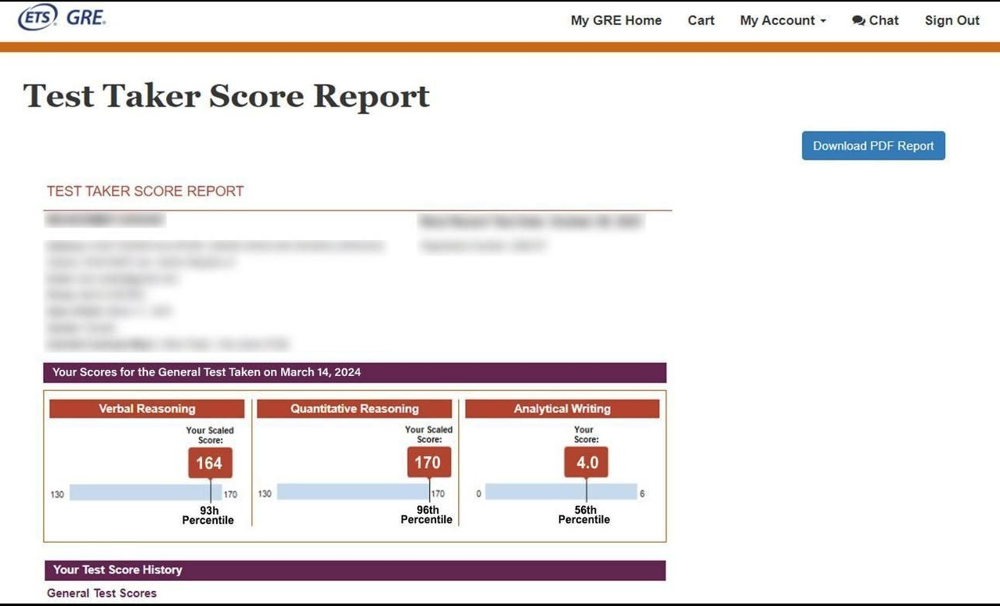

راهنمای جامع و بهروز آزمون GRE General
با کاملترین مرجع فارسی زبان، مسیر خود را برای موفقیت در آزمون GRE و ورود به دانشگاههای برتر دنیا هموار کنید. با جدیدترین تغییرات GRE در سال 2025 همراه باشید!
ثبتنام و برنامهریزی آزمونآزمون GRE چیست و چرا برای شما اهمیت دارد؟
آزمون GRE (Graduate Record Examinations) یکی از استانداردترین و معتبرترین آزمونهای ورودی برای مقاطع تحصیلات تکمیلی (کارشناسی ارشد و دکتری) در سراسر جهان، به ویژه در آمریکای شمالی و کانادا است. این آزمون که توسط موسسه ETS برگزار میشود، تواناییهای تحلیلی، استدلال کلامی و ریاضیات شما را که طی سالها تحصیل کسب کردهاید، میسنجد. نمره GRE یک معیار کلیدی برای کمیتههای پذیرش دانشگاههاست تا بتوانند توانایی علمی شما را با سایر متقاضیان مقایسه کنند و چشمانداز خوبی از آمادگی شما برای تحصیلات عالی ارائه دهد.
آزمون GRE به دو نوع اصلی تقسیم میشود:
- GRE General Test: این آزمون عمومیترین نوع GRE است و مهارتهای کلی شما در سه بخش اصلی (استدلال کلامی، استدلال کمی و نوشتار تحلیلی) را ارزیابی میکند. اکثر دانشگاهها و رشتهها برای پذیرش در مقاطع تحصیلات تکمیلی به نمره این آزمون نیاز دارند. این آزمون از سپتامبر 2023 کوتاهتر و کارآمدتر شده و اطلاعات آن در این صفحه بر اساس آپدیتهای 2025 ETS تنظیم شده است.
- GRE Subject Tests: این آزمونها دانش تخصصی شما را در رشتههای خاصی مانند زیستشناسی، شیمی، ادبیات انگلیسی، ریاضی، فیزیک و روانشناسی میسنجند. تنها برای تعداد محدودی از رشتهها و دانشگاههای برتر، به خصوص در مقطع دکتری، نمره این آزمونها ضروری است.
در این راهنما، ما بر روی GRE General Test تمرکز خواهیم کرد که نیاز اصلی اکثر داوطلبان ایرانی و متقاضیان تحصیل در خارج از کشور است.
ساختار جدید آزمون GRE General (نسخه کوتاهتر - حدود ۱ ساعت و ۵۸ دقیقه)
از سپتامبر ۲۰۲۳، آزمون GRE کوتاهتر شده و زمان برگزاری آن از حدود ۳ ساعت و ۴۵ دقیقه به کمتر از ۲ ساعت کاهش یافته است. آشنایی با ساختار جدید به شما کمک میکند زمانبندی خود را بهینه کنید و با آمادگی بیشتری در آزمون شرکت نمایید. این اطلاعات بر اساس آخرین تغییرات تا آوریل 2025 بهروزرسانی شدهاند.
استدلال کلامی (Verbal Reasoning)
این بخش توانایی شما در تحلیل و ارزیابی متون پیچیده، درک روابط بین کلمات و مفاهیم، و شناسایی اطلاعات کلیدی را میسنجد. این بخش نشان میدهد که چقدر میتوانید منطق و استدلال را از طریق زبان به کار ببرید.
- تعداد بخشها: ۲ بخش
- تعداد سوالات: مجموعاً ۲۷ سوال
- زمان: ۴۱ دقیقه (بخش اول ۱۸ دقیقه، بخش دوم ۲۳ دقیقه)
- نوع سوالات:
- Text Completion: تکمیل جای خالی در متن با کلمات مناسب.
- Sentence Equivalence: انتخاب دو کلمه که بهترین معنا را به جمله میدهند.
- Reading Comprehension: سوالات درک مطلب بر اساس متون علمی و ادبی.
استدلال کمی (Quantitative Reasoning)
این بخش توانایی شما در حل مسائل با استفاده از مفاهیم پایهای ریاضیات شامل جبر، حساب، هندسه و تحلیل دادهها را ارزیابی میکند. تمرکز بر روی استدلال کمی و توانایی شما در تفسیر اطلاعات عددی است.
- تعداد بخشها: ۲ بخش
- تعداد سوالات: مجموعاً ۲۷ سوال
- زمان: ۴۷ دقیقه (بخش اول ۲۱ دقیقه، بخش دوم ۲۶ دقیقه)
- نوع سوالات:
- Quantitative Comparison: مقایسه دو کمیت.
- Multiple-choice (Select One): انتخاب یک پاسخ صحیح از گزینهها.
- Multiple-choice (Select One or More): انتخاب یک یا چند پاسخ صحیح از گزینهها.
- Numeric Entry: وارد کردن پاسخ عددی به صورت مستقیم.
نوشتار تحلیلی (Analytical Writing)
این بخش توانایی شما در بیان ایدههای پیچیده به صورت واضح و مستدل، پشتیبانی از استدلالها با دلایل و مثالهای مرتبط، و تحلیل انتقادی یک موضوع را میسنجد. این بخش قبل از دو بخش دیگر آزمون برگزار میشود.
- تعداد تسکها: ۱ تسک (Analyze an Issue)
- تعداد سوالات: ۱ انشا
- زمان: ۳۰ دقیقه
- نکته: در نسخه جدید (از سپتامبر 2023)، تسک Analyze an Argument حذف شده است که باعث کوتاهتر شدن زمان آزمون شده است.
نکته مهم: آزمون GRE دارای ساختار Section-Adaptive است. یعنی عملکرد شما در بخش اول Verbal و Quant، سطح سختی بخش دوم را تعیین میکند. عملکرد بهتر در بخش اول به سوالات سختتر (و با ارزشتر) در بخش دوم منجر میشود. این ویژگی بر اهمیت پاسخگویی دقیق به سوالات ابتدایی هر بخش تأکید دارد.
سیستم نمرهدهی در آزمون GRE
درک سیستم نمرهدهی GRE و آگاهی از میانگین نمرات مورد نیاز دانشگاهها، به شما در هدفگذاری و برنامهریزی برای کسب نمره مطلوب کمک میکند. این اطلاعات بر اساس آخرین آپدیتهای ETS در 2025 ارائه شدهاند.
مقیاس نمرات
نمرات GRE در مقیاسهای مشخصی گزارش میشوند:
- Verbal Reasoning: ۱۳۰ تا ۱۷۰ (با فواصل ۱ نمرهای)
- Quantitative Reasoning: ۱۳۰ تا ۱۷۰ (با فواصل ۱ نمرهای)
- Analytical Writing: ۰ تا ۶ (با فواصل نیم نمرهای)
نمره کل شما معمولاً به صورت مجموع نمرات Verbal و Quant (مثلاً ۳۲۰ از ۳۴۰) گزارش میشود. نمره بخش نوشتار تحلیلی به صورت جداگانه اعلام میگردد.
نمره خوب چیست؟
تعریف "نمره خوب" در GRE کاملاً به رشته تحصیلی، دانشگاه مقصد و سطح رقابت بستگی دارد. اما به طور کلی میتوان طبقهبندی زیر را در نظر گرفت:
- +۳۲۵: نمره بسیار رقابتی (برای دانشگاههای Top 10 و رشتههای بسیار پرتقاضا)
- ۳۱۵-۳۲۵: نمره عالی (برای اکثر برنامههای دکتری و ارشد خوب و رقابتی)
- ۳۰۰-۳۱۵: نمره خوب (برای بسیاری از برنامههای ارشد قابل قبول و کافی)
- زیر ۳۰۰: ممکن است نیاز به تقویت داشته باشد و توصیه میشود مجدداً در آزمون شرکت کنید.
پیش از هر چیز، وبسایت دانشگاههای مورد نظرتان را برای اطلاع از حداقل نمرات GRE و میانگین نمرات پذیرفتهشدگان بررسی کنید.
اعتبار نمرات و گزینه ScoreSelect®
نمرات آزمون GRE به مدت ۵ سال از تاریخ برگزاری آزمون اعتبار دارند. پس از پنج سال، نمرات شما از پایگاه داده ETS حذف میشود و برای ارسال به دانشگاهها باید مجدداً در آزمون شرکت کنید.
گزینه ScoreSelect®: ETS به شما این امکان را میدهد که انتخاب کنید کدام نمره خود را به دانشگاهها بفرستید. در روز آزمون، میتوانید نمره همان روز یا تمام نمرات ۵ سال اخیر خود را بفرستید. پس از آزمون نیز میتوانید بهترین نمره خود را برای ارسال انتخاب نمایید. این ویژگی استرس آزمون را کاهش میدهد و به شما اجازه میدهد با خیال راحتتر در آزمونهای بعدی شرکت کنید تا بهترین عملکرد خود را ثبت کنید.
مراحل گام به گام ثبتنام و هزینه آزمون GRE
فرآیند ثبتنام در آزمون GRE نسبتاً ساده است، اما به دقت بالایی در وارد کردن اطلاعات و برنامهریزی نیاز دارد تا از هرگونه مشکل جلوگیری شود. هزینهها نیز از اهمیت بالایی برخوردارند. اطلاعات این بخش بر اساس آخرین بهروزرسانیهای ETS در 18 آوریل 2025 است.
ایجاد حساب کاربری در سایت ETS
اولین گام، ایجاد یک حساب کاربری شخصی در سایت رسمی ETS است. دقت کنید که نام و نام خانوادگی شما باید دقیقاً با نام درج شده در پاسپورت معتبر و تاریخدار شما یکسان باشد. هرگونه مغایرت میتواند منجر به ممانعت از ورود به جلسه آزمون شود.
انتخاب نوع و محل آزمون
پس از ورود به حساب کاربری خود، گزینه "Register / Find Test Centers, Dates" را انتخاب کنید. در اینجا باید نوع آزمون (GRE General Test) و سپس محل برگزاری (آیا میخواهید در یک مرکز آزمون رسمی شرکت کنید یا گزینه آزمون در خانه را انتخاب میکنید؟) را مشخص کنید. توجه داشته باشید که در ایران امکان برگزاری آزمون در خانه وجود ندارد و باید در مراکز آزمون شرکت کنید.
انتخاب تاریخ و ساعت مناسب
تاریخ و ساعت مورد نظر خود را از میان گزینههای موجود انتخاب کنید. مراکز آزمون ظرفیت محدودی دارند، به خصوص در فصول پیک اپلای (اواخر تابستان و پاییز). توصیه میشود برای رزرو جایگاه مناسب، از چند ماه قبل اقدام کنید تا مجبور به ثبتنام در تاریخهای نامطلوب نشوید.
پرداخت هزینه آزمون
هزینه آزمون GRE General Test در حال حاضر حدود ۲۲۰ دلار آمریکا است. این مبلغ باید از طریق کارتهای اعتباری بینالمللی (مانند ویزا یا مسترکارت) پرداخت شود. اگر به کارتهای بینالمللی دسترسی ندارید، میتوانید از خدمات شرکتهای واسطه پرداخت ارزی که در ایران فعالیت میکنند، استفاده نمایید. توجه داشته باشید که این هزینهها ممکن است بر اساس سیاستهای ETS در آینده تغییر کنند.
هزینههای جانبی (آپدیت آوریل 2025):
- تغییر تاریخ آزمون (Rescheduling): ۵۰ دلار
- تغییر مرکز آزمون: ۵۰ دلار
- ارسال نمرات اضافی (Additional Score Reports): ۳۰ دلار به ازای هر دانشگاه
- بازیابی نمره (Score Reinstatement): ۵۰ دلار
آمادگی و منابع کلیدی برای موفقیت در GRE
موفقیت در GRE نیازمند یک برنامه مطالعاتی منظم، استفاده از منابع معتبر و تمرین فراوان است. با انتخاب منابع صحیح، میتوانید به بهترین نتایج دست یابید.
شروع با منابع رسمی ETS
هیچ منبعی بهتر از منابع رسمی خود ETS برای آشنایی با فرمت و نوع سوالات آزمون وجود ندارد. حتماً از این موارد استفاده کنید:
- POWERPREP Online: شامل دو آزمون تمرینی رایگان است که دقیقاً مشابه آزمون اصلی هستند و بهترین ابزار برای ارزیابی اولیه و پیگیری پیشرفت شماست.
- Official Guide to the GRE General Test: کتاب رسمی راهنما که توسط ETS منتشر میشود و حاوی صدها سوال واقعی به همراه توضیحات کامل است.
- GRE General Test Practice Book: یک PDF رایگان با نمونه سوالات و پاسخها.
تمرکز بر دایره لغات (Verbal)
بخش کلامی به شدت به دایره لغات آکادمیک و پیچیده وابسته است. برای تسلط بر این بخش:
- کتابهای لغت: 1100 Words You Need to Know، 504 Absolutely Essential Words، Word Power Made Easy.
- فلشکارتهای آنلاین: اپلیکیشنها و وبسایتهایی مانند Magoosh Vocabulary Builder، Quizlet.
- خواندن متون متنوع: مقالات علمی، ادبی و تحلیلی از منابع معتبر مانند The New York Times، The Economist، The Atlantic.
مرور مفاهیم ریاضی (Quant)
بخش ریاضیات GRE شامل مباحثی از جبر، هندسه، آمار و احتمال در سطح دبیرستان است. تمرکز اصلی باید بر روی سرعت و دقت در حل مسائل و مدیریت زمان باشد:
- کتابهای آمادگی Quant: Manhattan Prep GRE Math Foundations و 5 lb. Book of GRE Practice Problems.
- دورههای آنلاین: Khan Academy برای مرور مفاهیم پایهای ریاضی.
- تمرین محاسبات ذهنی: با وجود ماشینحساب روی صفحه، تقویت محاسبات ذهنی به شما در صرفهجویی زمان کمک میکند.
نوشتار تحلیلی (AWA)
برای کسب نمره خوب در بخش نوشتار، تمرین منظم و درک ساختار مقالهنویسی تحلیلی ضروری است:
- ETS Topic Pools: ETS لیست کامل موضوعات Issue را منتشر میکند. با تمرین نوشتن برای این موضوعات آشنا شوید.
- نمونه مقالات با نمره بالا: بررسی مقالات نمونهای که توسط ETS منتشر شدهاند، به شما در درک ساختار و کیفیت نگارش کمک میکند.
- فیدبک گرفتن: از اساتید یا دوستانتان بخواهید مقالات شما را بخوانند و نقد کنند.
یک برنامه مطالعاتی حداقل ۳ تا ۶ ماهه، با تمرکز بر نقاط ضعف و تقویت نقاط قوت، میتواند شانس موفقیت شما را به شدت افزایش دهد.
استراتژیهای مؤثر برای مطالعه و کسب نمره بالا در GRE
صرفاً مطالعه منابع کافی نیست؛ برای بهینهسازی زمان و انرژی خود، به استراتژیهای هوشمندانه نیاز دارید.
نکات کلیدی برای هر بخش
- استدلال کلامی (Verbal):
تکنیکهای مطالعه:
- یادگیری لغات در بستر جمله: تنها لغت حفظ نکنید؛ کاربرد آنها را در جمله و متن بیاموزید.
- خواندن فعال: هنگام مطالعه متون Reading Comprehension، خلاصهبرداری کنید و ساختار متن را تحلیل نمایید.
- مدیریت زمان: برای هر سوال در بخش Verbal، زمان محدودی دارید. سرعت عمل را با تمرین افزایش دهید.
- استدلال کمی (Quantitative):
تکنیکهای مطالعه:
- مرور فرمولها و مفاهیم: یک جزوه خلاصه از تمام فرمولها و نکات ریاضی تهیه کنید و مرتباً مرور نمایید.
- حل مسئله متنوع: فقط به یک نوع سوال بسنده نکنید؛ انواع مختلف سوالات را از منابع گوناگون حل کنید.
- استفاده هوشمندانه از ماشینحساب: یاد بگیرید چه زمانی و چگونه از ماشینحساب مجازی GRE بهینه استفاده کنید.
- نوشتار تحلیلی (Analytical Writing):
تکنیکهای مطالعه:
- طراحی ساختار قبل از نوشتن: قبل از شروع به نوشتن، ساختار مقاله (مقدمه، پاراگرافهای بدنه، نتیجهگیری) را در ذهن یا روی کاغذ طراحی کنید.
- استدلال قوی: مطمئن شوید که استدلالهای شما منطقی، واضح و با مثالهای محکم پشتیبانی میشوند.
- تمرین نوشتن با زمانبندی: مقالات را در همان زمان تعیین شده (۳۰ دقیقه) بنویسید تا با فشار زمان آشنا شوید.
برنامهریزی کلی مطالعه
- ارزیابی اولیه: با یک آزمون آزمایشی کامل (ترجیحاً POWERPREP) شروع کنید تا نقاط قوت و ضعف خود را شناسایی کنید.
- برنامهریزی واقعبینانه: بر اساس نمره هدف و زمان باقیمانده تا آزمون، یک برنامه مطالعاتی واقعبینانه و قابل اجرا تنظیم کنید.
- مرور منظم: مطالبی که قبلاً خواندهاید را به صورت دورهای مرور کنید تا فراموش نشوند.
- شبیهسازی آزمون: در طول دوره آمادگی، حداقل ۳-۴ آزمون شبیهسازی شده کامل بدهید تا با شرایط آزمون اصلی کاملاً آشنا شوید.
- تجزیه و تحلیل خطاها: پس از هر آزمون آزمایشی، سوالات غلط را به دقت بررسی کنید تا دلیل اشتباه را بیابید و از تکرار آن جلوگیری کنید.
آزمون GRE در خانه (At Home Test)
در دوران همهگیری و پس از آن، ETS امکان برگزاری آزمون GRE را به صورت آنلاین و در خانه فراهم کرده است. این گزینه برای بسیاری از داوطلبان، به خصوص در شرایط خاص، بسیار جذاب است. اما مقایسه با آزمون در مرکز و اطلاع از نیازمندیهای آن ضروری است.
آزمون GRE در خانه
- مکان: شما میتوانید آزمون را در یک اتاق خصوصی و ساکت در منزل یا محل کار خود برگزار کنید.
- تجهیزات مورد نیاز:
- کامپیوتر شخصی یا لپتاپ (نه تبلت یا گوشی موبایل)
- وبکم خارجی یا داخلی (با قابلیت چرخش 360 درجه برای نمایش محیط)
- میکروفون و بلندگو (هدفون مجاز نیست)
- اینترنت پایدار و پرسرعت
- یادداشتبرداری: فقط مجاز به استفاده از وایتبورد پاکشونده (Dry Erase Board) یا برگه در پوشه شفاف هستید که در پایان آزمون باید پاک شوند.
- نظارت: آزمون توسط مراقب انسانی (Proctor) به صورت زنده و آنلاین از طریق وبکم نظارت میشود.
- مزایا: راحتی بیشتر، انعطافپذیری بالا در زمانبندی (آزمون ۲۴/۷ در دسترس است)، عدم نیاز به جابجایی.
- معایب: نیاز به اینترنت پایدار، امکان بروز مشکلات فنی، نگرانی از قطع شدن ارتباط، عدم امکان برگزاری در ایران به دلیل محدودیتهای ETS.
آزمون GRE در مرکز
- مکان: آزمون در یکی از مراکز رسمی و معتبر ETS در سراسر جهان برگزار میشود.
- تجهیزات: تمامی تجهیزات (کامپیوتر، هدفون، کاغذ و مداد برای یادداشتبرداری) توسط مرکز فراهم میشود.
- یادداشتبرداری: معمولاً کاغذ و مداد به شما داده میشود و پس از آزمون جمعآوری میگردد.
- نظارت: نظارت حضوری توسط مراقبین مرکز انجام میشود.
- مزایا: محیط استاندارد و کنترلشده آزمون، عدم نگرانی از مشکلات فنی یا اینترنت، تمرکز بیشتر به دلیل عدم حواسپرتی در منزل.
- معایب: نیاز به جابجایی، محدودیت در زمانبندی و ظرفیت، استرس محیط جدید.
برای داوطلبان در ایران، تنها گزینه فعلی شرکت در آزمون GRE در مراکز رسمی آزمون است.
نکات کلیدی برای روز آزمون GRE
آمادگی ذهنی و فیزیکی در روز آزمون به اندازه ماهها مطالعه اهمیت دارد. با رعایت این نکات، میتوانید با اعتماد به نفس بیشتری در جلسه حاضر شوید و بهترین عملکرد خود را به نمایش بگذارید.
بررسی نهایی مدارک و محل
شب قبل از آزمون، تمام مدارک شناسایی مورد نیاز (تنها پاسپورت معتبر برای ایرانیان)، آدرس دقیق مرکز آزمون و مسیر دسترسی را بررسی کنید. اگر در خانه آزمون میدهید، از عملکرد صحیح کامپیوتر، وبکم و اینترنت خود مطمئن شوید.
استراحت کافی و مناسب
خواب کافی و باکیفیت در شب قبل از آزمون، برای حفظ تمرکز و عملکرد مطلوب مغز در طول آزمون طولانی GRE بسیار حیاتی است. از مطالعه سنگین یا برنامهریزی پر استرس در روز آخر خودداری کنید.
صبحانه سبک و مغذی
یک صبحانه سبک و مغذی بخورید تا انرژی لازم برای چند ساعت آزمون را داشته باشید. از خوردن غذای سنگین، پرچرب یا مقدار زیادی کافئین که ممکن است باعث ناراحتی معده یا افزایش استرس شود، پرهیز کنید.
مدرک شناسایی معتبر
مهمترین مدرک شناسایی شما، اصل پاسپورت معتبر و تاریخدار است. حتماً آن را همراه داشته باشید و از کپی یا سایر مدارک شناسایی استفاده نکنید؛ در غیر این صورت اجازه ورود به جلسه آزمون را نخواهید داشت.
حضور به موقع
حداقل ۳۰ تا ۶۰ دقیقه قبل از زمان شروع آزمون در مرکز آزمون حضور داشته باشید تا زمان کافی برای انجام مراحل اداری و امنیتی داشته باشید. دیر رسیدن میتواند منجر به لغو آزمون شما شود.
مدیریت استرس و آرامش
حفظ آرامش و مدیریت استرس در طول آزمون بسیار مهم است. اگر سوالی برایتان دشوار بود، وقت زیادی را روی آن صرف نکنید؛ به سراغ سوال بعدی بروید و در صورت داشتن زمان بازگردید.
نمونه کارنامههای GRE Home Edition اخذ شده توسط تیم ما
ما در کنار شما هستیم تا بهترین نتیجه را در آزمون GRE کسب کنید. در ادامه، میتوانید نمونههایی از کارنامههای موفق GRE Home Edition (آزمون در خانه) را مشاهده کنید که توسط تیم ما و با کمکهای مشاوره تخصصی کسب شدهاند.
کارنامه موفقیت ۱
نام دانشجو: م. احمدی
تاریخ آزمون: اردیبهشت 1403
نمره Verbal: 160/170
نمره Quantitative: 165/170
نمره AWA: 4.5/6
قبولی در مقطع دکتری دانشگاه تورنتو
کارنامه موفقیت ۲
نام دانشجو: س. رضایی
تاریخ آزمون: بهمن 1402
نمره Verbal: 158/170
نمره Quantitative: 168/170
نمره AWA: 4.0/6
پذیرش در مقطع ارشد دانشگاه MIT
کارنامه موفقیت ۳
نام دانشجو: ع. کریمی
تاریخ آزمون: مهر 1403
نمره Verbal: 162/170
نمره Quantitative: 160/170
نمره AWA: 5.0/6
بورسیه کامل دکتری در اروپا
برای مشاهده کارنامههای بیشتر و مشاوره تخصصی، با ما تماس بگیرید.
سوالات متداول (FAQ) درباره آزمون GRE
پاسخ به پرتکرارترین سوالات داوطلبان آزمون GRE برای روشن شدن ابهامات و کمک به برنامهریزی بهتر شما.
آزمون GRE چقدر سخت است؟
سختی آزمون GRE نسبی است و به پیشزمینه تحصیلی و زبانی شما بستگی دارد. بخش ریاضیات (Quantitative) آن شامل مباحث ریاضی دبیرستان است اما نیاز به سرعت و دقت بالایی دارد. چالش اصلی بخش کلامی (Verbal) دایره لغات بسیار وسیع و درک مطلب پیچیده است. بخش نوشتاری (Writing) نیز نیازمند تحلیل قوی و نگارش ساختارمند است. با آمادگی کافی و برنامهریزی صحیح، کسب نمره بالا کاملاً امکانپذیر است.
آیا در آزمون GRE میتوان از ماشینحساب استفاده کرد؟
بله، در بخش ریاضیات (Quantitative Reasoning) یک ماشینحساب ساده و آنلاین بر روی صفحه نمایش کامپیوتر در دسترس شما خواهد بود. استفاده از ماشینحساب شخصی یا هر وسیله جانبی دیگری مجاز نیست. توصیه میشود بیش از حد به این ماشینحساب تکیه نکنید و مهارتهای محاسبات ذهنی خود را تقویت کنید تا در زمان صرفهجویی شود.
نمره GRE تا چه مدت اعتبار دارد؟
نمرات آزمون GRE به مدت ۵ سال از تاریخ برگزاری آزمون اعتبار دارند. پس از پنج سال، نمرات شما از پایگاه داده ETS حذف میشود و برای ارسال به دانشگاهها باید مجدداً در آزمون شرکت کنید. حتماً به تاریخ اعتبار نمرات خود توجه کنید تا در زمان اپلای با مشکل مواجه نشوید.
تفاوت اصلی GRE General Test با GRE Subject Tests چیست؟
آزمون GRE General مهارتهای کلی و پایهای (کلامی، ریاضیات و تحلیل نوشتاری) را میسنجد و برای اکثر رشتههای تحصیلات تکمیلی مورد نیاز است. اما آزمونهای GRE Subject دانش تخصصی شما در یک رشته خاص مانند زیستشناسی، شیمی، ریاضیات یا روانشناسی را ارزیابی میکنند و تنها برای برخی رشتهها و دانشگاههای خاص (معمولاً برنامههای دکتری رقابتی) ضروری هستند. همیشه الزامات دانشگاه مورد نظرتان را بررسی کنید.
گزینه ScoreSelect در GRE چیست؟
گزینه ScoreSelect به شما این امکان را میدهد که انتخاب کنید کدام یک از نمرات آزمونهای GRE خود (در صورت شرکت چندین باره) را برای دانشگاهها ارسال کنید. در روز آزمون، میتوانید نمره همان روز یا تمام نمرات ۵ سال اخیر خود را بفرستید. پس از آزمون نیز میتوانید بهترین نمره خود را برای ارسال انتخاب کنید. این ویژگی استرس آزمون را کاهش میدهد و به شما اجازه میدهد بهترین عملکردتان را به دانشگاهها ارائه دهید.
هزینه آزمون GRE چقدر است و آیا تخفیفی وجود دارد؟
هزینه آزمون GRE General Test در حال حاضر حدود ۲۲۰ دلار آمریکا است. هزینههای اضافی برای خدماتی مانند تغییر تاریخ آزمون، تغییر مرکز آزمون یا ارسال نمرات اضافی (30 دلار به ازای هر دانشگاه) وجود دارد. ETS گاهاً کمکهزینههایی (Fee Reduction Vouchers) برای دانشجویان با نیاز مالی ارائه میدهد که باید از طریق وبسایت ETS شرایط آن را بررسی کنید. در ایران امکان استفاده از این ووچرها معمولاً وجود ندارد و باید از طریق صرافیها هزینه را پرداخت کنید.
چند بار میتوان در آزمون GRE شرکت کرد؟
شما میتوانید هر ۲۱ روز یک بار در آزمون GRE General شرکت کنید، تا سقف ۵ بار در هر دوره ۱۲ ماهه. این فرصت به شما اجازه میدهد تا در صورت عدم رضایت از نمره اول، دوباره شانس خود را امتحان کنید و با گزینه ScoreSelect® بهترین نمره را ارسال کنید.